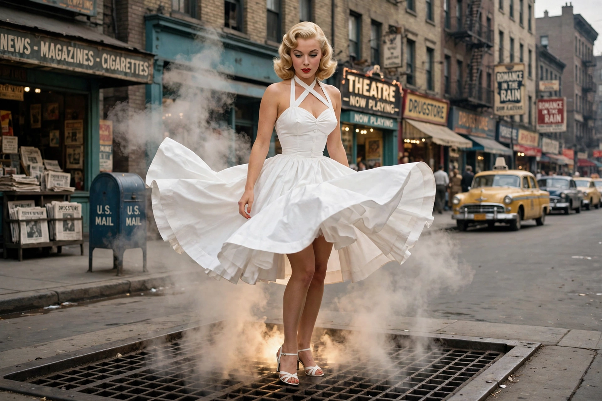

The Seven Year Itch
| The Seven Year Itch | |
|---|---|
 | |
| Directed by | Billy Wilder |
| Starring | Marilyn Monroe; Tom Ewell |
| Released | June 3, 1955 |
| Based on | The 1952 play by George Axelrod |
| Studio | 20th Century Fox |
The Seven Year Itch is a 1955 American romantic comedy film directed by Billy Wilder and starring Marilyn Monroe and Tom Ewell, adapted from George Axelrod's hit 1952 Broadway play. Ewell plays Richard Sherman, a Manhattan publishing executive alone in the city for a hot summer while his wife and son vacation in Maine, whose imagination runs riot when a beautiful young model (Monroe, credited simply as "The Girl") moves into the apartment upstairs. The film contains Monroe's most famous scene — her white dress billowing over a subway grate — and helped cement her status as a cultural icon.
Plot
Sherman, who edits cheap paperback reprints of classics, has just worked on a book by a psychiatrist claiming that many men have extramarital urges in the seventh year of marriage. Alone in his apartment, he fantasizes constantly while alternately courting and fleeing temptation: he invites the Girl down for a drink, daydreams of seduction in the style of famous films, and panics over imagined revenge by his wife. Wilder, constrained by the Hays Code, kept the relationship innocent — unlike the play, in which Sherman actually has an affair. At the end, Sherman rushes to catch a train to join his family.
The subway-grate scene
The scene in which Monroe stands over a Lexington Avenue subway grate outside the Trans-Lux Theatre was shot on location in September 1954 before crowds of onlookers, then reshot on a studio set. Photographs of the original shoot became among the most reproduced images of the twentieth century. Monroe's husband, baseball star Joe DiMaggio, was reportedly furious at the spectacle; their marriage collapsed within weeks.
Reception and legacy
The film was a major commercial success, and Monroe won acclaim for her comic performance. Coming between Gentlemen Prefer Blondes and her serious dramatic training at the Actors Studio, it remains the quintessential Monroe comedy, and its title passed into the language as a phrase for marital restlessness.